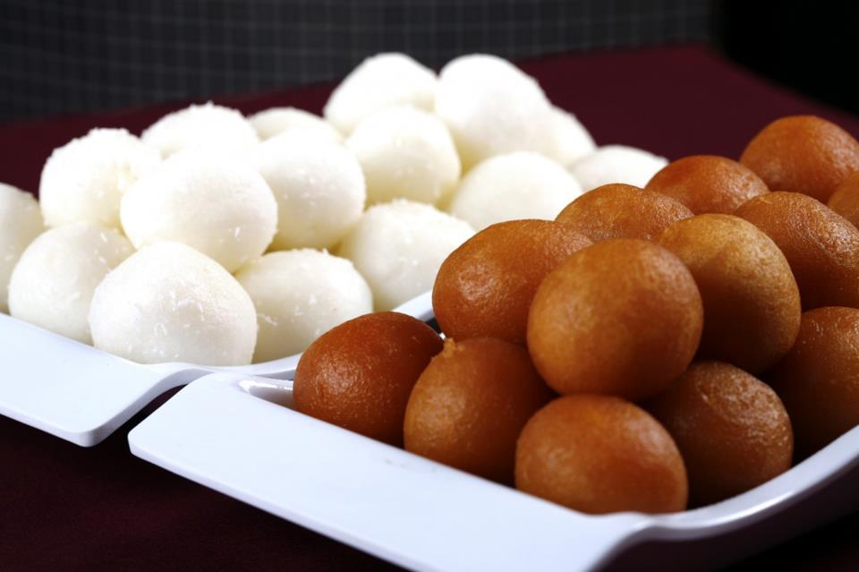

Ancient Sanskrit literature from India mention feasts and offerings of mithas (sweet). Rigveda mentions a sweet cake made of barley called apūpa, where barley flour was either fried in ghee or boiled in water, and then dipped in honey. Malpua preserves both the name and the essentials of this preparation.